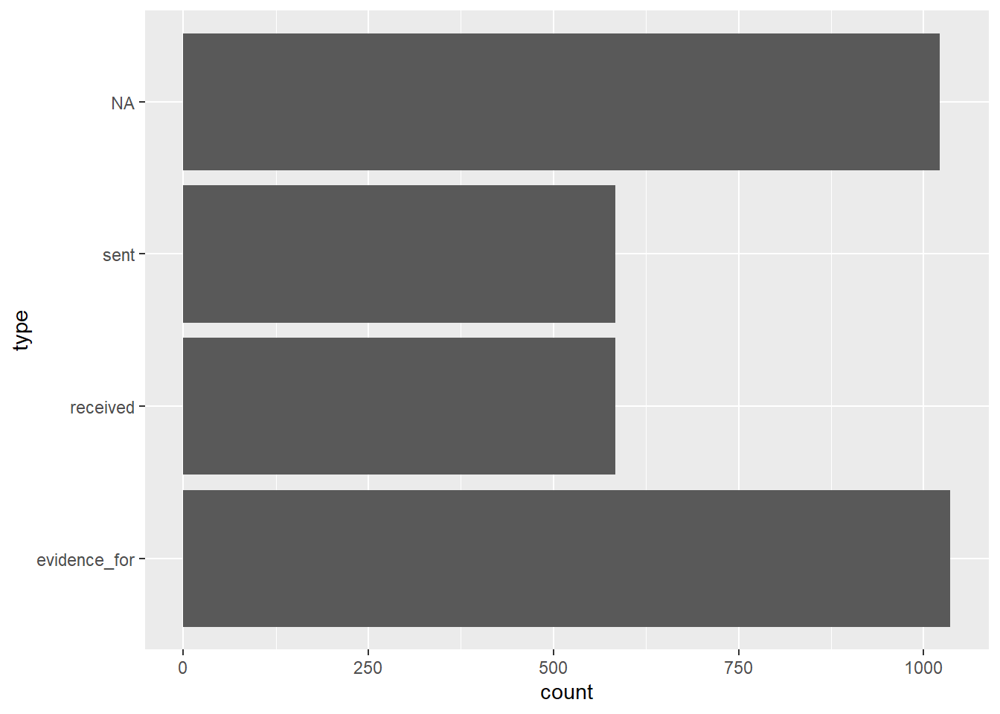
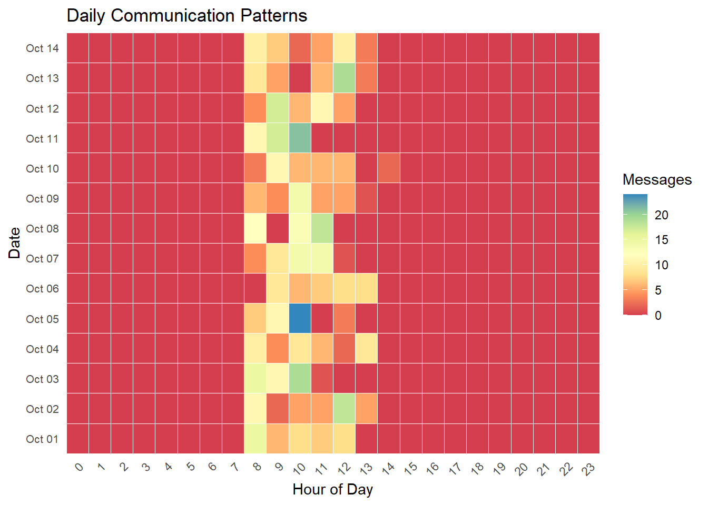

Show the code
pacman::p_load(
jsonlite,
tidyverse,
SmartEDA,
tidygraph,
ggraph,
lubridate,
dplyr)For the exercise, our group will choose MC 3 as our main topic, the detail background referring to VAST MC3
Oceanus: From Fishing Nets to Tourism Tensions
Once defined by its fishing traditions, Oceanus has transformed dramatically in the last decade. After a crackdown on illegal fishing, those involved redirected investments toward ocean tourism, creating community friction. When international star Sailor Shift announced plans to film locally, investigative journalist Clepper Jessen uncovered troubling connections around the temporary closure of Nemo Reef. His work exposed expedited approvals and secretive arrangements linking island officials, Sailor’s team, influential local families, and conservationists The Green Guardians—suggesting a story of corruption hiding beneath paradise’s surface.
Clepper has built a knowledge graph from two weeks of intercepted radio communications in Oceanus. Here are the key tasks to be analyzed:
Task 1: Temporal Communication Patterns
Create visual analytics to identify daily patterns in communication timing
Analyze how these patterns changed over the two-week observation period
Select a specific entity and determine who influences them based on these patterns
Task 2: Relationship Analysis
Develop visualizations to explore connections between vessels and people
Identify closely associated groups
Determine predominant topics for each group (e.g., environmentalism, Sailor Shift, fishing/leisure vessels)
Task 3: Pseudonym Identification
Expand visualizations to reveal who is using pseudonyms
Identify known pseudonyms (“Boss”, “The Lookout”) and discover additional ones
Account for pseudonyms potentially used by multiple entities
Demonstrate how these visualizations simplify entity identification
Explain how understanding pseudonyms changes interpretation of activities
Task 4: Nadia Conti Investigation
Use visual analytics to provide evidence regarding possible illegal activity by Nadia Conti
Create a visual summary of Nadia’s actions
Assess whether Clepper’s suspicions are justified
Each task builds on previous analysis to uncover the potential corruption surrounding the Nemo Reef closure and connections between officials, Sailor Shift’s team, influential families, and The Green Guardians.
add lubridata,dplyr
| Package | Description |
|---|---|
| jsonlite | JSON parsing and generation |
| tidyverse | Core data-science suite (dplyr, ggplot2, etc.) |
| SmartEDA | Automated exploratory data analysis |
| tidygraph | Tidy tools for graph-data manipulation and analysis |
| ggraph | Grammar-based graph/network visualization |
pacman::p_load(
jsonlite,
tidyverse,
SmartEDA,
tidygraph,
ggraph,
lubridate,
dplyr)2.2 Loading data
MC3_graph <- fromJSON("data/MC3_graph.json")
glimpse(MC3_graph)List of 5
$ directed : logi TRUE
$ multigraph: logi FALSE
$ graph :List of 4
..$ mode : chr "static"
..$ edge_default: Named list()
..$ node_default: Named list()
..$ name : chr "VAST_MC3_Knowledge_Graph"
$ nodes :'data.frame': 1159 obs. of 31 variables:
..$ type : chr [1:1159] "Entity" "Entity" "Entity" "Entity" ...
..$ label : chr [1:1159] "Sam" "Kelly" "Nadia Conti" "Elise" ...
..$ name : chr [1:1159] "Sam" "Kelly" "Nadia Conti" "Elise" ...
..$ sub_type : chr [1:1159] "Person" "Person" "Person" "Person" ...
..$ id : chr [1:1159] "Sam" "Kelly" "Nadia Conti" "Elise" ...
..$ timestamp : chr [1:1159] NA NA NA NA ...
..$ monitoring_type : chr [1:1159] NA NA NA NA ...
..$ findings : chr [1:1159] NA NA NA NA ...
..$ content : chr [1:1159] NA NA NA NA ...
..$ assessment_type : chr [1:1159] NA NA NA NA ...
..$ results : chr [1:1159] NA NA NA NA ...
..$ movement_type : chr [1:1159] NA NA NA NA ...
..$ destination : chr [1:1159] NA NA NA NA ...
..$ enforcement_type : chr [1:1159] NA NA NA NA ...
..$ outcome : chr [1:1159] NA NA NA NA ...
..$ activity_type : chr [1:1159] NA NA NA NA ...
..$ participants : int [1:1159] NA NA NA NA NA NA NA NA NA NA ...
..$ thing_collected :'data.frame': 1159 obs. of 2 variables:
.. ..$ type: chr [1:1159] NA NA NA NA ...
.. ..$ name: chr [1:1159] NA NA NA NA ...
..$ reference : chr [1:1159] NA NA NA NA ...
..$ date : chr [1:1159] NA NA NA NA ...
..$ time : chr [1:1159] NA NA NA NA ...
..$ friendship_type : chr [1:1159] NA NA NA NA ...
..$ permission_type : chr [1:1159] NA NA NA NA ...
..$ start_date : chr [1:1159] NA NA NA NA ...
..$ end_date : chr [1:1159] NA NA NA NA ...
..$ report_type : chr [1:1159] NA NA NA NA ...
..$ submission_date : chr [1:1159] NA NA NA NA ...
..$ jurisdiction_type: chr [1:1159] NA NA NA NA ...
..$ authority_level : chr [1:1159] NA NA NA NA ...
..$ coordination_type: chr [1:1159] NA NA NA NA ...
..$ operational_role : chr [1:1159] NA NA NA NA ...
$ edges :'data.frame': 3226 obs. of 5 variables:
..$ id : chr [1:3226] "2" "3" "5" "3013" ...
..$ is_inferred: logi [1:3226] TRUE FALSE TRUE TRUE TRUE TRUE ...
..$ source : chr [1:3226] "Sam" "Sam" "Sam" "Sam" ...
..$ target : chr [1:3226] "Relationship_Suspicious_217" "Event_Communication_370" "Event_Assessment_600" "Relationship_Colleagues_430" ...
..$ type : chr [1:3226] NA "sent" NA NA ...MC3_schema <- fromJSON("data/MC3_schema.json")
glimpse(MC3_schema)List of 1
$ schema:List of 2
..$ nodes:List of 3
.. ..$ Entity :List of 2
.. ..$ Event :List of 2
.. ..$ Relationship:List of 2
..$ edges:List of 3
.. ..$ description: chr "Connections between nodes in the knowledge graph"
.. ..$ is_inferred: chr "bool"
.. ..$ types :'data.frame': 6 obs. of 5 variables:str(MC3_graph,max.level = 1)List of 5
$ directed : logi TRUE
$ multigraph: logi FALSE
$ graph :List of 4
$ nodes :'data.frame': 1159 obs. of 31 variables:
$ edges :'data.frame': 3226 obs. of 5 variables:nodes_tbl <- as_tibble(MC3_graph$nodes)
edges_tbl <- as_tibble(MC3_graph$edges)after slpit to nodes and edges, the data shouw 3226 edges and 1159 nodes
ggplot(data=nodes_tbl,
aes(y=`type`))+
geom_bar()
ggplot(data=nodes_tbl,
aes(y=`sub_type`))+
geom_bar()
Generate Node Sub-Type Inventory
# Extract unique sub_types for each node type
entities <- sort(unique(nodes_tbl$sub_type[nodes_tbl$type == "Entity"]))
events <- sort(unique(nodes_tbl$sub_type[nodes_tbl$type == "Event"]))
relationships <- sort(unique(nodes_tbl$sub_type[nodes_tbl$type == "Relationship"]))
node_inventory <- list(
Entities = entities,
Events = events,
Relationships = relationships
)List down
for (grp in names(node_inventory)) {
cat("**", grp, "** (", length(node_inventory[[grp]]), "):\n", sep = "")
cat(paste0(" - ", node_inventory[[grp]]), sep = "\n")
cat("\n")
}**Entities** (5):
- Group
- Location
- Organization
- Person
- Vessel
**Events** (11):
- Assessment
- Collaborate
- Communication
- Criticize
- Enforcement
- Fishing
- HarborReport
- Monitoring
- TourActivity
- TransponderPing
- VesselMovement
**Relationships** (9):
- AccessPermission
- Colleagues
- Coordinates
- Friends
- Jurisdiction
- Operates
- Reports
- Suspicious
- Unfriendlybased on the above list, we noticed that based on the task requirement, now we only focus on type=“even” and sub_type =“communication” , next step is to create communication nodes
comm_nodes <-nodes_tbl %>%
filter(type=="Event",
sub_type == "Communication") %>%
select(event_id = id,timestamp)
glimpse(comm_nodes)Rows: 584
Columns: 2
$ event_id <chr> "Event_Communication_1", "Event_Communication_2", "Event_Com…
$ timestamp <chr> "2040-10-01 08:09:00", "2040-10-01 08:10:00", "2040-10-01 08…#for edges to define sender and receiver
ggplot(data=edges_tbl,
aes(y=`type`))+
geom_bar()
sent_edges <-edges_tbl %>% filter(type=="sent")%>%
select(sender = source,event_id=target)
recv_edges <-edges_tbl %>% filter(type=="received")%>%
select(event_id = source,receiver=target)using inner_join to combine sender and received
msgs <- sent_edges %>%
inner_join(recv_edges, by="event_id") %>%
inner_join(comm_nodes, by="event_id") %>%
mutate(ts = ymd_hms(timestamp, tz="UTC")) %>%
mutate(date = as_date(ts), hour = hour(ts))visualizing the heatmap data
heatmap_data <- msgs %>%
count(date, hour) %>%
complete(
date = seq(min(date), max(date), by = "1 day"),
hour = 0:23,
fill = list(n = 0)
)
ggplot(heatmap_data, aes(x=hour, y=date, fill=n)) +
geom_tile(color="white") +
scale_x_continuous(
breaks = 0:23,
expand = c(0,0)
)+
scale_y_date(
breaks = seq(min(heatmap_data$date), max(heatmap_data$date), by = "1 day"),
date_labels = "%b %d",
expand = c(0, 0)
) +
scale_fill_distiller(
name = "Messages",
palette = "Spectral",
direction = 1
) +
labs(
title = "Daily Communication Patterns",
x = "Hour of Day",
y = "Date"
) +
theme_minimal() +
theme(
axis.text.x = element_text(angle = 45, hjust = 1),
axis.text.y = element_text(size = 8),
panel.grid = element_blank()
)
timestamp included data and time, so first step we need to split to get the day and hour
edges_time <-nodes_tbl %>%
mutate(ts=ymd_hms(timestamp)) %>%
mutate(
date = as_date(ts),
day = day(ts),
hour = hour(ts)
)